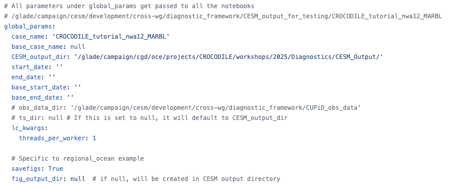
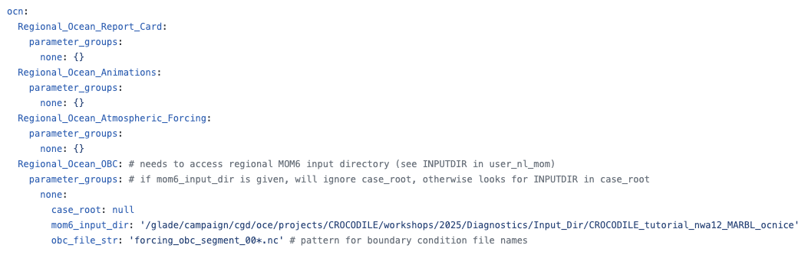

Running a CUPiD Example#
CUPiD provides examples of configuration files to allow users to look at a variety of diagnostics in CUPiD/examples.
These examples are designed to be run on the NCAR supercomputers,
using output curated from CESM development runs and stored in /glade/campaign/cesm/development/cross-wg/diagnostic_framework/CESM_output_for_testing/.
These example configuration files also act as templates for the CESM workflow discussed in the next section.
Note: we actually access the example output through the CROCODILE workshop directory for simplicity:
/glade/campaign/cgd/oce/projects/CROCODILE/workshops/2025/Diagnostics/CESM_Output/. It just links back toCESM_output_for_testing.
We have added a regional_mom6 example to CUPiD that provides diagnostics for a 10-month run.
This run uses a 1/12° grid over the northwest Atlantic domain, and includes ocean biogeochemistry tracers from the Marine Biogeochemistry library (MARBL).
The compset used for this run was
1850_DATM%JRA_SLND_SICE_MOM6%MARBL-BIO_SROF_SGLC_SWAV_SESP
We will run the regional_ocean example included with CUPiD. This includes four notebooks:
Regional_Ocean_Report_Card.ipynb: basic plotting and analysis utilities, primarily focused on surface fields.Regional_Ocean_Animations.ipynb: create animations.Regional_Ocean_Atmospheric_Forcing.ipynb: look at atmospheric forcing at the surface.Regional_Ocean_OBC.ipynb: visualize surface fields and open boundary conditions.
What We Need#
Make sure (cupid-infrastructure) and (cupid-analysis) conda environments are fully installed before starting this task.
Task 2: Let’s Run CUPiD#
Navigate to your installation of CUPiD, we will run the diagnostics in the example directory.
cd ${CUPID_ROOT}
Now change to the examples directory, and look at what’s inside.
cd examples
ls
Output
additional_metrics external_diag_packages key_metrics regional_ocean
We will be using the regional_ocean example for this demo and the workshop; if this example is not in your examples directory, let us know.
Change into the regional_ocean directory.
cd regional_ocean
For a standalone CUPiD run (i.e. not part of a CESM case run) we will run cupid-diagnostics from the same directory as a config.yml file.
CUPiD will automatically recognize the file is in the current directory, and the output will also be in the same directory. Each example has a specific config.yml, let’s look at the one in regional_ocean.
Peak at the config.yml#
There are multiple tools that you can use to view files in JupyterHub and Linux, we recommend using cat or less from the terminal, or opening it directly in JupyterLab.
You can also view this config file here (it may be outdated).
Most of the settings in config.yml stay the same or similar from the other examples, but there are a few key changes to note.
Global Params#
 Here is where we specify that CUPiD should run diagnostics on the example output discussed above.
Want to generate timeseries?
Note that the timeseries output directory ts_dir is not instantiated.
You are able to create timeseries files, but you are not able to save them to the CESM_output_dir as you normally would because we only have read permissions there.
If you want to run the timeseries tool, set ts_dir: /glade/derecho/scratch/USERNAME/archive or another directory
(you can check what your username is with echo ${USER} in the terminal).
Not recommended this for this example; it contains multiple terabytes of output.
Notebook Parameters#

Here we pass in the specific variables for each notebook. Read more about specific variables in each notebook. The mom6_input_dir let’s us access the input boundary conditions, the CESM workflow will handle this automatically.
This section also tells us this example will run four notebooks:
Regional_Ocean_Animations.ipynb,
Regional_Ocean_Atmospheric_Forcing.ipynb,
Regional_Ocean_OBC.ipynb, and
Regional_Ocean_Report_Card.ipynb.
Time to Run CUPiD!#
Now we understand the processes and notebooks will run, it is time to run CUPiD. From the same ${CUPID_ROOT}/examples/regional_ocean directory, run on one processor with:
cupid-diagnostics --serial
This step might take some time, and we can track the progress with the output to terminal.
The notebooks will be run in nblibrary and then copied to the current directory under computed_notebooks/ocn. If you want to rerun the notebooks, make sure to manually copy the regional_utils.py file with
cp ../../nblibrary/ocn/regional_utils.py computed_notebooks/ocn/
Optional: CUPiD Webpage#
We recommend viewing at the notebooks in JupyterHub and rerunning them in JupyterHub if you want to play with the output.
If you want to use CUPiD’s webpage feature, in the same directory, ${CUPID_ROOT}/examples/regional_ocean, run:
cupid-webpage
Reference the CUPiD Documentation for Looking at Output.